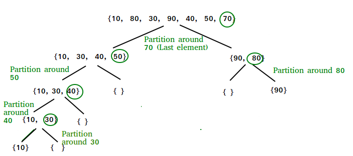

SORTING
Arranging the elements in non-decreasing order (each element is less than or equal to its successor) is called Sorting.
There are various types of sorting :-
Bubble Sort
Bubble Sort is the simplest sorting algorithm that works by repeatedly swapping the adjacent elements if they are in wrong order.
Example:
First Pass:
( 5 1 4 2 8 ) –> ( 1 5 4 2 8 ), Here, algorithm compares the first two elements, and swaps since 5 > 1.
( 1 5 4 2 8 ) –> ( 1 4 5 2 8 ), Swap since 5 > 4
( 1 4 5 2 8 ) –> ( 1 4 2 5 8 ), Swap since 5 > 2
( 1 4 2 5 8 ) –> ( 1 4 2 5 8 ), Now, since these elements are already in order (8 > 5), algorithm does not swap them.
Second Pass:
( 1 4 2 5 8 ) –> ( 1 4 2 5 8 )
( 1 4 2 5 8 ) –> ( 1 2 4 5 8 ), Swap since 4 > 2
( 1 2 4 5 8 ) –> ( 1 2 4 5 8 )
( 1 2 4 5 8 ) –> ( 1 2 4 5 8 )
Now, the array is already sorted, but our algorithm does not know if it is completed. The algorithm needs one whole pass without any swap to know it is sorted.
Third Pass:
( 1 2 4 5 8 ) –> ( 1 2 4 5 8 )
( 1 2 4 5 8 ) –> ( 1 2 4 5 8 )
( 1 2 4 5 8 ) –> ( 1 2 4 5 8 )
( 1 2 4 5 8 ) –> ( 1 2 4 5 8 )
Worst and Average Case Time Complexity : O(n^2).
Worst case occurs when array is reverse sorted.
Best Case Time Complexity : O(n). Best case occurs when array is already sorted.
Auxiliary Space: O(1)
Bubble Sort Code :-
void bubbleSort(int arr[], int n)
{
int i, j;
bool swapped;
for (i = 0; i < n-1; i++)
{
swapped = false;
for (j = 0; j < n-i-1; j++)
{
if (arr[j] > arr[j+1])
{
swap(arr[j], arr[j+1]);
swapped = true;
}
}
if (swapped == false)
break;
}
}
Selection Sort
The selection sort algorithm sorts an array by repeatedly finding the minimum element (considering ascending order) from unsorted part and putting it at the beginning. The algorithm maintains two subarrays in a given array.
- 1) The subarray which is already sorted.
- 2) Remaining subarray which is unsorted.
In every iteration of selection sort, the minimum element (considering ascending order) from the unsorted subarray is picked and moved to the sorted subarray.
Selection Sort Code :-
void selectionSort(int arr[], int n)
{
int i, j, min_idx;
for (i = 0; i < n-1; i++)
{
min_idx = i;
for (j = i+1; j < n; j++)
if (arr[j] < arr[min_idx])
min_idx = j;
swap(arr[min_idx],arr[i]);
}
}
Insertion Sort
Insertion sort is a simple sorting algorithm that works similar to the way you sort playing cards in your hands.
The array is virtually split into a sorted and an unsorted part.
Values from the unsorted part are picked and placed at the correct position in the sorted part.
Example of Insertion how it works:-

Insertion Sort Code :-
void insertionSort(int arr[], int n)
{
int i, key, j;
for (i = 1; i < n; i++)
{
key = arr[i];
j = i - 1;
while (j >= 0 && arr[j] > key)
{
arr[j + 1] = arr[j];
j = j - 1;
}
arr[j + 1] = key;
}
}
Quick Sort
QuickSort is a Divide and Conquer algorithm. It picks an element as pivot and partitions the given array around the picked pivot. There are many different versions of quickSort that pick pivot in different ways.
- 1) Always pick first element as pivot.
- 2) Always pick last element as pivot (implemented below)
- 3) Pick a random element as pivot.
- 4) Pick median as pivot.
The key process in quickSort is partition(). Target of partitions is, given an array and an element x of array as pivot, put x at its correct position in sorted array and put all smaller elements (smaller than x) before x, and put all greater elements (greater than x) after x. All this should be done in linear time.
QuickSort Algorithm :-
Partition Code:-
int partition (int arr[], int low, int high)
{
int pivot = arr[high];
int i = (low - 1);
for (int j = low; j <= high - 1; j++)
{
if (arr[j] < pivot)
{
i++;
swap(arr[i],arr[j]);
}
}
swap(arr[i+1],arr[high]);
return (i + 1);
}
QuickSort Code:-
void quickSort(int arr[], int low, int high)
{
if (low < high)
{
int q = partition(arr, low, high);
quickSort(arr, low, q - 1);
quickSort(arr, q + 1, high);
}
}
Merge Sort
Merge Sort is a Divide and Conquer algorithm. It divides the input array into two halves, calls itself for the two halves, and then merges the two sorted halves. The merge() function is used for merging two halves. The merge(arr, l, m, r) is a key process that assumes that arr[l..m] and arr[m+1..r] are sorted and merges the two sorted sub-arrays into one.
Merge Algorithm :-
MergeSort(arr[], l, r)
If r > l
1. Find the middle point to divide the array into two halves:
middle m = l+ (r-l)/2
2. Call mergeSort for first half:
Call mergeSort(arr, l, m)
3. Call mergeSort for second half:
Call mergeSort(arr, m+1, r)
4. Merge the two halves sorted in step 2 and 3:
Call merge(arr, l, m, r)

Merge Code :-
void merge(int arr[], int l, int m, int r)
{
int i, j, k;
int n1 = m - l + 1;
int n2 = r - m;
int L[n1], R[n2];
for (i = 0; i < n1; i++)
L[i] = arr[l + i];
for (j = 0; j < n2; j++)
R[j] = arr[m + 1 + j];
i = 0;
j = 0;
k = l;
while (i < n1 && j < n2)
{
if (L[i] <= R[j])
{
arr[k] = L[i];
i++;
}
else
{
arr[k] = R[j];
j++;
}
k++;
}
while (i < n1)
{
arr[k] = L[i];
i++;
k++;
}
while (j < n2)
{
arr[k] = R[j];
j++;
k++;
}
}
Merge-Sort Code :-
void mergeSort(int arr[], int l, int r)
{
if (l < r)
{
int m = l + (r - l) / 2;
mergeSort(arr, l, m);
mergeSort(arr, m + 1, r);
merge(arr, l, m, r);
}
}